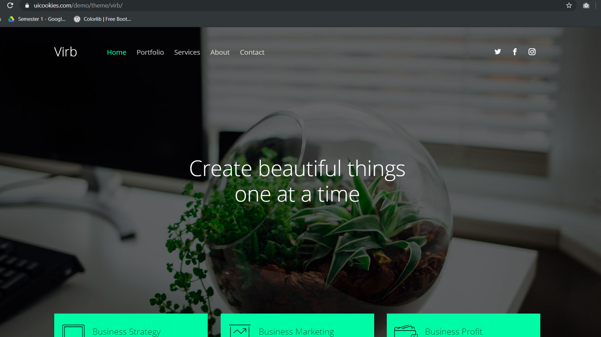
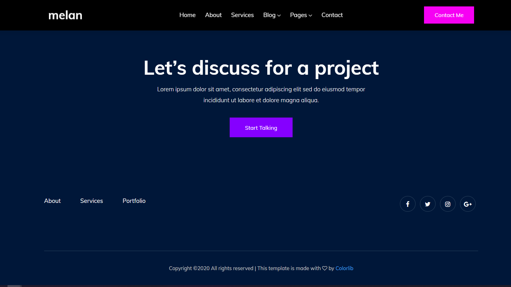
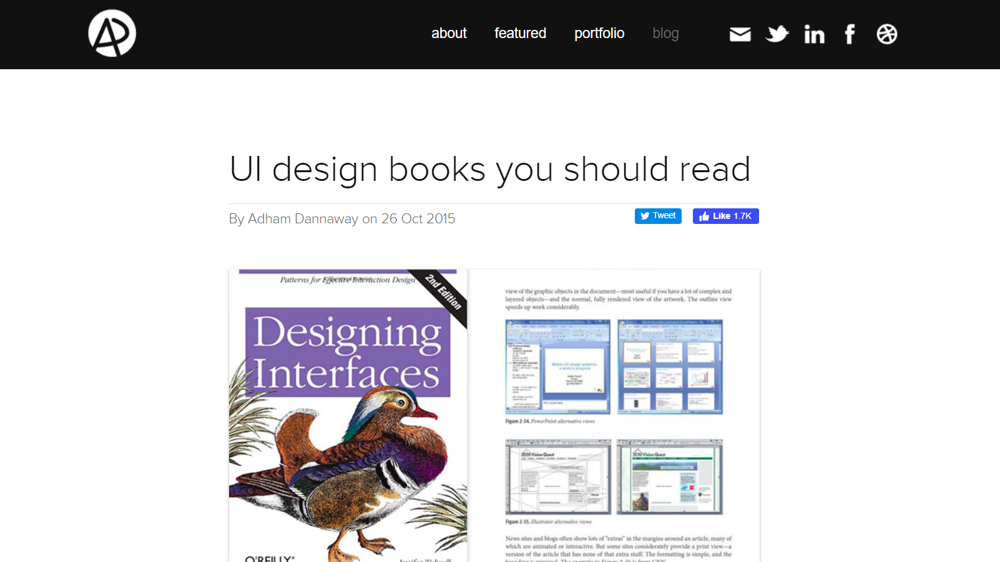
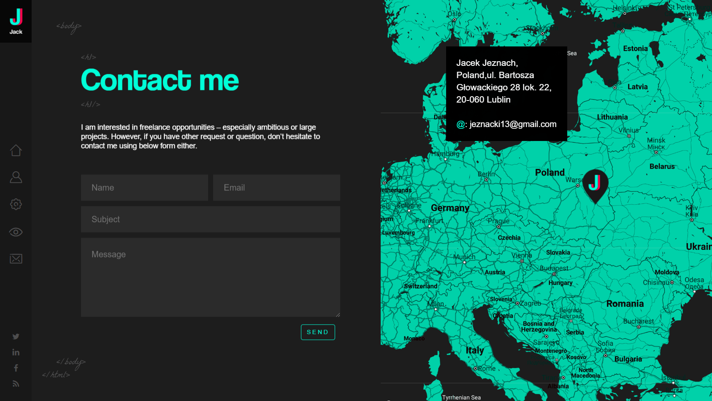

Virb
Virb is a portfolio template present in the uicookies website. It has fantastic design with
very smooth looking interface. The background used a slight opacity to make it a little more darker
which make the text much more easier to read. I've used a similar effect on my portfolio.
Click here to visit their website.
Melan
Melan is another portfolio website template that I looked at while creating my portfolio.
I've used it as a reference while creative the footer. It looks very clean and the colors
look vibrant.
Click here to visit their website.
Adham Dannaway
Adam Dannaway is a UI/UX and front end developer. While searching for websites with good looking
navigation bar, I found his website and I have implemented a similar style in my own navigation
bar, like the use of a logo and the color of the background.
Click here to visit his website.
Jacek Jeznach
Jacek Jeznach is a web developer. His portfolio website is brilliantly laid out and very user interactive. I've used his website as a reference for the contact section. I implemented some of the things that he has used in his contact form like using a placeholder.
Click here to visit his website.
Grant Burke

Grant Burke is an Ottawa based branding and web design studio known for combining creativity
with strategic thinking. Their Products and Services section is created in a way that makes it very easy for
the user to read. I've used a similar style in my own portfolio with some changes.
Click here to visit their website.